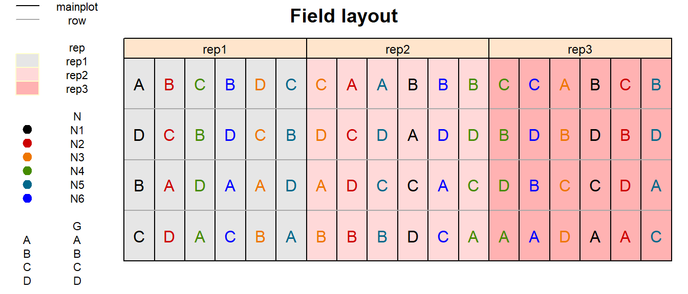
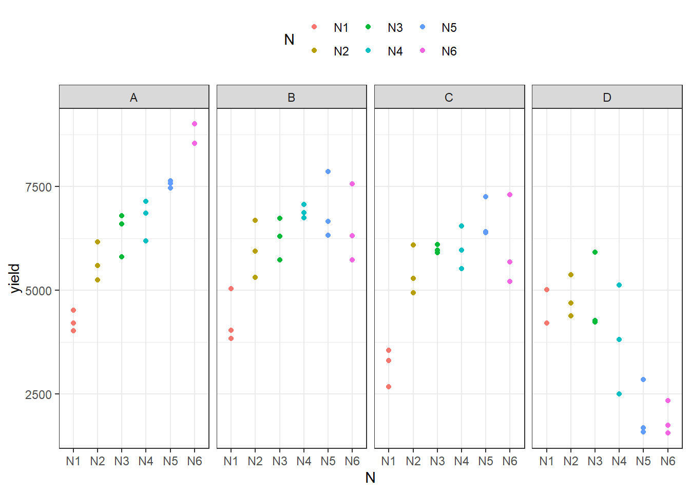
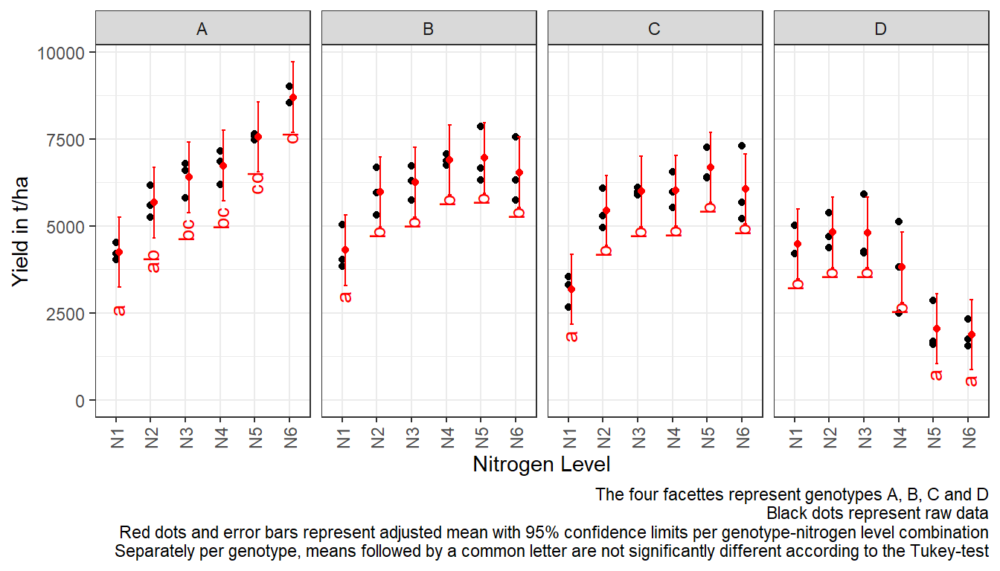

Split-plot design
# packages
pacman::p_load(readr, tidyverse, forcats, # data import and handling
lme4, lmerTest, # linear mixed model
emmeans, multcomp, # mean comparisons
ggplot2, desplot) # plotsData
This example is taken from Chapter “5 Split-plots” of the course material “Mixed models for metric data (3402-451)” by Prof. Dr. Hans-Peter Piepho. It considers slightly modified version of data published in Gomez & Gomez (1984) from a yield (kg/ha) trial laid out as a split-plot design. The trial had 4 genotypes (G), 6 nitrogen levels (N or n_amount) with 3 complete replicates (rep) and 6 incomplete blocks (mainplot) within each replicate.
Import
# data (import via URL)
dataURL <- "https://raw.githubusercontent.com/SchmidtPaul/DSFAIR/master/data/Gomez%26Gomez1984.csv"
dat <- read_csv(dataURL)
dat## # A tibble: 72 x 8
## yield row col rep mainplot G N n_amount
## <dbl> <dbl> <dbl> <chr> <chr> <chr> <chr> <dbl>
## 1 4520 4 1 rep1 mp1 A N1 0
## 2 5598 2 2 rep1 mp2 A N2 60
## 3 6192 1 3 rep1 mp3 A N4 120
## 4 8542 2 4 rep1 mp4 A N6 180
## 5 5806 2 5 rep1 mp5 A N3 90
## 6 7470 1 6 rep1 mp6 A N5 150
## 7 4034 2 1 rep1 mp1 B N1 0
## 8 6682 4 2 rep1 mp2 B N2 60
## 9 6869 3 3 rep1 mp3 B N4 120
## 10 6318 4 4 rep1 mp4 B N6 180
## # ... with 62 more rowsFormatting
Before anything, the columns rep, mainplot, G and N should be encoded as factors, since R by default encoded them as character.
Exploring
In order to obtain a field layout of the trial, we can use the desplot() function. Notice that for this we need two data columns that identify the row and col of each plot in the trial.
desplot(data = dat,
form = rep ~ col + row | rep, # fill color per rep, headers per rep
text = G, cex = 1, shorten = "no", # show genotype names per plot
col = N, # color of genotype names for each N-level
out1 = mainplot, out1.gpar = list(col = "black"), # lines between mainplots
out2 = row, out2.gpar = list(col = "darkgrey"), # lines between rows
main = "Field layout", show.key = TRUE, key.cex = 0.7) # formatting
Split-plot designs are designs for factorial experiments, which involve two independent randomization steps. The field was divided into three blocks (replicates). Each block was divided into six main plots. For every block separately, the six fertilizer treatments were randomly allocated to main plots. Every main plot was split into four sub plots to accommodate the four varieties. Separately for each main plot, the varieties were randomly allocated to the four sub-plots. It is important to recognize that nitrogen, the so-called main plot factor, was randomized according to a randomized complete block design. Varieties, corresponding to the so-called sub-plot factor, were also randomized according to a randomized complete block design, taking main plots as block. This type of split-plot design is the most common form, but there are many other forms of „the“ split-plot design depending on the design according to which the main plot and sub plot factors are randomized.
We could now have a look at the arithmetic means and standard deviations for yield per genotype (G) and nitrogen level (N).
dat %>%
group_by(G) %>%
summarize(mean = mean(yield),
std.dev = sd(yield)) %>%
arrange(desc(mean)) %>% # sort
print(n=Inf) # print full table## # A tibble: 4 x 3
## G mean std.dev
## <fct> <dbl> <dbl>
## 1 A 6554. 1475.
## 2 B 6156. 1078.
## 3 C 5563. 1269.
## 4 D 3642. 1434.dat %>%
group_by(N) %>%
summarize(mean = mean(yield),
std.dev = sd(yield)) %>%
arrange(desc(mean)) %>% # sort
print(n=Inf) # print full table## # A tibble: 6 x 3
## N mean std.dev
## <fct> <dbl> <dbl>
## 1 N3 5866. 832.
## 2 N4 5864. 1434.
## 3 N5 5812 2349.
## 4 N6 5797. 2660.
## 5 N2 5478. 657.
## 6 N1 4054. 672.We can also create a plot to get a better feeling for the data.
ggplot(data = dat,
aes(y = yield,
x = N,
color = N)) +
facet_grid(~G) + # facette per N level
geom_point() + # scatter plot observed
theme_bw() + # clearer plot format
theme(legend.position = "top") # legend on top
Modelling
Finally, we can decide to fit a linear model with yield as the response variable. In this example it makes sense to group the effects in our model as either design effects or treatment effects. The treatments here are the genotypes G and the nitrogen levels N which we will include in the model as main effects, but also via their interaction effect G:N. Regarding the design, split-plot designs have two randomization units, which need to be represented in the linear model: main plots and sub plots. As a general principle, each randomization units needs to be represented by a random effect, so each randomization unit has its own error term. In the example, fertilizer levels are compared at the main plot level (mainplot), so the main plot error is the relevant error term. The genotypes are compared at the sub plot level, and so the sub plot error is the relevant error term. Furthermore, the model needs to contain a block (rep) effect because the main plots were randomized in complete blocks.
Variance component estimates
We can extract the variance component estimates for our mixed model as follows:
## grp vcov
## 1 rep:mainplot 51377.73
## 2 Residual 349441.81ANOVA
Thus, we can conduct an ANOVA for this model. As can be seen, the F-test of the ANOVA (using Kenward-Roger’s method for denominator degrees-of-freedom and F-statistic) finds the G:N interaction effects to be statistically significant (p<0.001).
## Type III Analysis of Variance Table with Kenward-Roger's method
## Sum Sq Mean Sq NumDF DenDF F value Pr(>F)
## G 89885075 29961692 3 36 85.7416 < 2.2e-16 ***
## N 19192886 3838577 5 10 10.9849 0.0008277 ***
## rep 683088 341544 2 10 0.9774 0.4095330
## G:N 69378044 4625203 15 36 13.2360 2.078e-10 ***
## ---
## Signif. codes: 0 '***' 0.001 '**' 0.01 '*' 0.05 '.' 0.1 ' ' 1Therefore, we should compare the adjusted means for all genotype-nitrogen level combinations.
Mean comparisons
Option 1: Between all 24 combinations
all_mean_comparisons <- mod %>%
emmeans(pairwise ~ N:G,
adjust = "tukey",
lmer.df = "kenward-roger") %>%
pluck("emmeans") %>%
cld(details = TRUE, Letters = letters) # add letter display
all_mean_comparisons$emmeans # adjusted means## N G emmean SE df lower.CL upper.CL .group
## N6 D 1881 366 41.9 684 3077 a
## N5 D 2047 366 41.9 850 3243 a
## N1 C 3177 366 41.9 1981 4374 ab
## N4 D 3816 366 41.9 2620 5012 abc
## N1 A 4253 366 41.9 3056 5449 bcd
## N1 B 4306 366 41.9 3110 5502 bcd
## N1 D 4481 366 41.9 3285 5678 bcde
## N3 D 4812 366 41.9 3616 6008 bcdef
## N2 D 4816 366 41.9 3620 6012 bcdef
## N2 C 5443 366 41.9 4246 6639 cdefg
## N2 A 5672 366 41.9 4476 6868 cdefgh
## N2 B 5982 366 41.9 4786 7178 defgh
## N3 C 5994 366 41.9 4798 7190 defgh
## N4 C 6014 366 41.9 4818 7210 defgh
## N6 C 6065 366 41.9 4869 7262 defgh
## N3 B 6259 366 41.9 5063 7455 defgh
## N3 A 6400 366 41.9 5204 7596 efgh
## N6 B 6540 366 41.9 5344 7737 fgh
## N5 C 6687 366 41.9 5491 7884 fgh
## N4 A 6733 366 41.9 5536 7929 fghi
## N4 B 6895 366 41.9 5699 8091 ghi
## N5 B 6951 366 41.9 5754 8147 ghi
## N5 A 7563 366 41.9 6367 8760 hi
## N6 A 8701 366 41.9 7504 9897 i
##
## Results are averaged over the levels of: rep
## Degrees-of-freedom method: kenward-roger
## Confidence level used: 0.95
## Conf-level adjustment: sidak method for 24 estimates
## P value adjustment: tukey method for comparing a family of 24 estimates
## significance level used: alpha = 0.05Option 2: Within each genotype
withinG_mean_comparisons <- mod %>%
emmeans(pairwise ~ N | G,
adjust = "tukey",
lmer.df = "kenward-roger") %>%
pluck("emmeans") %>%
cld(details = TRUE, Letters = letters) # add letter display
withinG_mean_comparisons$emmeans # adjusted means## G = A:
## N emmean SE df lower.CL upper.CL .group
## N1 4253 366 41.9 3243 5262 a
## N2 5672 366 41.9 4663 6681 ab
## N3 6400 366 41.9 5391 7409 bc
## N4 6733 366 41.9 5723 7742 bc
## N5 7563 366 41.9 6554 8573 cd
## N6 8701 366 41.9 7691 9710 d
##
## G = B:
## N emmean SE df lower.CL upper.CL .group
## N1 4306 366 41.9 3297 5315 a
## N2 5982 366 41.9 4973 6991 b
## N3 6259 366 41.9 5250 7268 b
## N6 6540 366 41.9 5531 7550 b
## N4 6895 366 41.9 5886 7904 b
## N5 6951 366 41.9 5941 7960 b
##
## G = C:
## N emmean SE df lower.CL upper.CL .group
## N1 3177 366 41.9 2168 4187 a
## N2 5443 366 41.9 4433 6452 b
## N3 5994 366 41.9 4985 7003 b
## N4 6014 366 41.9 5005 7023 b
## N6 6065 366 41.9 5056 7075 b
## N5 6687 366 41.9 5678 7697 b
##
## G = D:
## N emmean SE df lower.CL upper.CL .group
## N6 1881 366 41.9 871 2890 a
## N5 2047 366 41.9 1037 3056 a
## N4 3816 366 41.9 2807 4825 b
## N1 4481 366 41.9 3472 5491 b
## N3 4812 366 41.9 3803 5821 b
## N2 4816 366 41.9 3807 5825 b
##
## Results are averaged over the levels of: rep
## Degrees-of-freedom method: kenward-roger
## Confidence level used: 0.95
## Conf-level adjustment: sidak method for 6 estimates
## P value adjustment: tukey method for comparing a family of 6 estimates
## significance level used: alpha = 0.05Present results
Mean comparisons
For this example we can create a plot that displays both the raw data and the results, i.e. the comparisons of the adjusted means that are based on the linear model.
We will do this for Option 2: Within each genotype:
formatted_emmeans <- withinG_mean_comparisons$emmeans %>%
as_tibble()
ggplot() +
facet_grid(~G) +
# black dots representing the raw data
geom_point(
data = dat,
aes(y = yield, x = N)
) +
# red dots representing the adjusted means
geom_point(
data = formatted_emmeans,
aes(y = emmean, x = N),
color = "red",
position = position_nudge(x = 0.1)
) +
# red error bars representing the confidence limits of the adjusted means
geom_errorbar(
data = formatted_emmeans,
aes(ymin = lower.CL, ymax = upper.CL, x = N),
color = "red",
width = 0.1,
position = position_nudge(x = 0.1)
) +
# red letters
geom_text(
data = formatted_emmeans,
aes(y = lower.CL, x = N, label = .group),
color = "red",
angle = 90,
hjust = 1,
position = position_nudge(y = - 1)
) +
ylim(0, NA) + # force y-axis to start at 0
ylab("Yield in t/ha") + # label y-axis
xlab("Nitrogen Level") + # label x-axis
labs(caption = "The four facettes represent genotypes A, B, C and D
Black dots represent raw data
Red dots and error bars represent adjusted mean with 95% confidence limits per genotype-nitrogen level combination
Per genotype, means followed by a common letter are not significantly different according to the Tukey-test and within") +
theme_bw() + # clearer plot format
theme(axis.text.x = element_text(angle=90, vjust=0.5)) # rotate x-axis label
R-Code and exercise solutions
Please click here to find a folder with .R files. Each file contains
- the entire R-code of each example combined, including
- solutions to the respective exercise(s).
Please feel free to contact me about any of this!
schmidtpaul1989@outlook.com